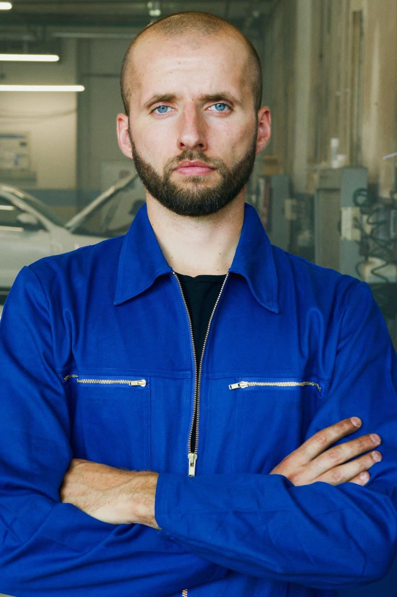
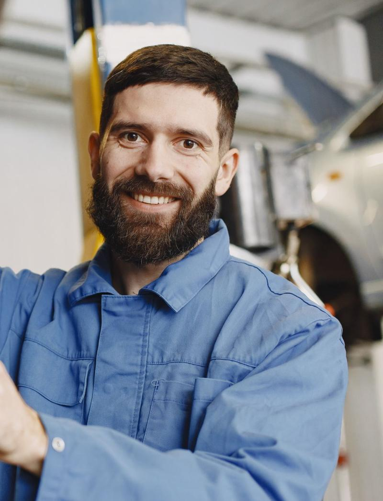
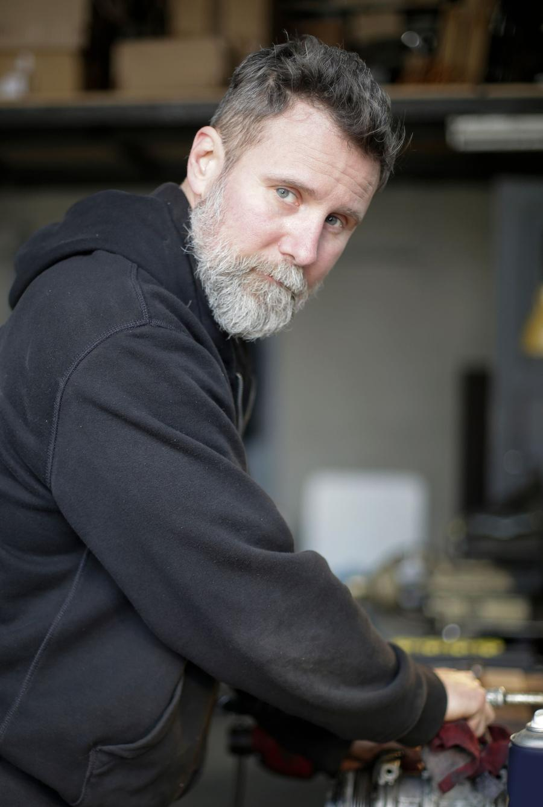

Салтівка, з 20147 хв від м. СтудентськаТроє майстрів · один бокс на людину
Ваше авто ремонтують люди, яких ви знаєте на ім’я
Майстер сам пише вам у Telegram: що знайшов, скільки коштує, що можна відкласти.
Записатися до майстра
Салтівські ями знаю напам’ять. Стукає спереду — покажу, що саме.

Колодки передні — 2,1 мм, мінімум 3. Міняємо сьогодні за 780 ₴ чи до суботи доїздите?
Спершу причина, потім ціна. Фото скидаю одразу в чат.

Старі деталі завжди віддаємо. Свої привезли — хоч з Барабашова — поставимо.